实验 10: 运动控制接口进阶编程
Advanced Motion Commander Programming
运行前确认小组 URI
本实验的 Python 脚本统一从环境变量 CFLIB_URI 读取实验 3 中分配的完整 radio URI，不需要把小组地址重复写入每个代码文件。打开新终端后先执行：
echo "$CFLIB_URI"输出必须与本组标签上的完整 URI 完全一致，包括接口编号、channel、速率和 address。若输出为空或不正确，请返回实验 3 的“将完整 URI 保存到虚拟机”步骤重新设置；确认无误后再运行本实验脚本。
一、实验目标
学习Motion Commander类下的各种子函数以控制无人机
组合上述学到的子函数，让无人机做出一些花样飞行动作
熟悉开发流程，为阶段综合实践做准备
二、实验准备
之前实验已经配置好连接到无人机的客户端的虚拟机系统。并且需要具备前几门实验已经积累的linux系统操作经验。再需要一点的python编程基础。
实验内容
本次实验将主要进行python脚本的运行，编程库参考资料可直接打开 Bitcraze cflib User Guides：
https://www.bitcraze.io/documentation/repository/crazyflie-lib-python/master/user-guides/若在进行实验中遇到困难，可直接打开上述网址进一步参考。同时部分操作和知识要点也在上节课的实验手册中有提及，如有不会的地方可以再参考上节的实验手册，这部分操作这节实验手册不再赘述。
一、深度认识motion commander
首先我们先复习一下之前用到过的Motion Commander类代码。
这里可以参考我们在第四节课用到的test.py中的内容，该python代码实现了简单的控制无人机的部分动作。
下载经审核的完整脚本: motion_commander_sequence.py
#!/usr/bin/env python3
"""Finite MotionCommander sequence with Flow-deck and URI checks."""
import threading
import time
import cflib.crtp
from cflib.crazyflie import Crazyflie
from cflib.crazyflie.syncCrazyflie import SyncCrazyflie
from cflib.positioning.motion_commander import MotionCommander
from cflib.utils import uri_helper
URI = uri_helper.uri_from_env(default="")
flow_deck_attached = threading.Event()
def request_arming(scf, armed):
for service_name in ("platform", "supervisor"):
service = getattr(scf.cf, service_name, None)
request = getattr(service, "send_arming_request", None)
if request is not None:
request(armed)
return
raise RuntimeError("This cflib version has no arming service.")
def flow_deck_callback(name, value):
if int(value):
flow_deck_attached.set()
def main():
if not URI:
raise RuntimeError("CFLIB_URI is empty; configure the group URI first.")
cflib.crtp.init_drivers(enable_debug_driver=False)
with SyncCrazyflie(URI, cf=Crazyflie(rw_cache="./cache")) as scf:
scf.cf.param.add_update_callback(
group="deck", name="bcFlow2", cb=flow_deck_callback
)
time.sleep(1.0)
if not flow_deck_attached.wait(timeout=5.0):
raise RuntimeError("Flow deck was not detected; takeoff cancelled.")
armed = False
try:
request_arming(scf, True)
armed = True
time.sleep(1.0)
with MotionCommander(scf, default_height=0.30) as commander:
time.sleep(1.0)
commander.forward(0.50, velocity=0.20)
time.sleep(1.0)
commander.up(0.20, velocity=0.15)
time.sleep(1.0)
commander.circle_right(0.50, velocity=0.20, angle_degrees=270)
commander.down(0.20, velocity=0.15)
time.sleep(1.0)
commander.left(0.20, velocity=0.20)
time.sleep(1.0)
commander.forward(0.50, velocity=0.20)
finally:
if armed:
request_arming(scf, False)
if __name__ == "__main__":
main()
我们再复习一下已经学到的相关内容，我们关注这个代码的核心部分，从第17行开始，我们创建了一个motion commander的实体类mc，这个实体mc创建之后负责控制无人机的运动，自创建的一瞬间，则会自动执行无人机起飞的程序，默认起飞至0.3m的高度，在第18行我们在终端中输出taking off，提示无人机已经起飞，并且让整个程序停止1秒，让无人机稳定一下飞行状态。接下来的代码，可以看到我们调用mc类的一个子函数forward，使得无人机向前移动0.5m后停下。注意，现在这套代码所适配的硬件为自身的陀螺仪和flowdeck模块，无人机的速度和高度都由flowdeck提供，但其精度有限，可能有时的偏差会略大，这种情况下保证无人机自身的状态正常，可以调节给函数传入的参数来让无人机飞到理想的位置。例如传入0.5但实际无人机多走了0.1m，可以减小传入的参数使得无人机在实际上能走到合适的位置。
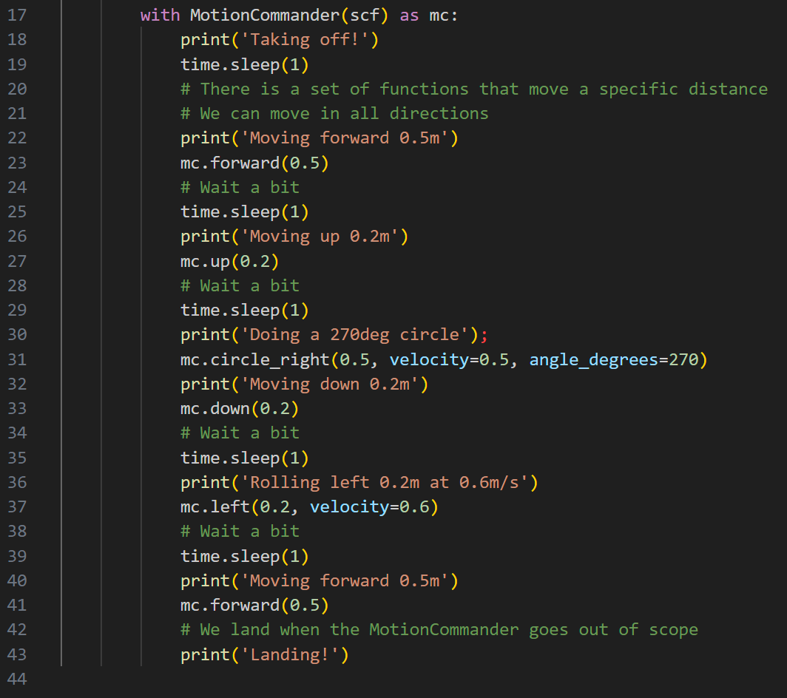
再往下看，所有使用到time.sleep（1）函数的地方都是为了让无人机保持当前的状态1秒以稳定姿态。第17行，mc类调用了up的子函数，该语句使得无人机高度上升了0.2m。从这里可以看出，该类的很多子函数的作用从命名上就可以看出。我们再看一个复杂的，第31行的circle_right子函数传入了三个参数，该子函数的作用为让无人机从原地开始向右开始飞行出圆弧的轨迹。传入的第一个参数0.5代表了该圆的半径为0.5m，第二个参数velocity代表了速度为0.5m/s，第三个参数angle_degrees代表了旋转圆弧的度数，赋值360则会让无人机转完一整圈。之后的代码从命名上也能推断出其效果。
那么如何严谨地了解到motion commander类的子函数到底有哪些功能，参数如何传入呢，我们可以点击到官方的开源网站查看，当然在虚拟机中已经安装好了cflib的库，也是可以查看源码的，这里方便大家查看，直接把源码的关键部分给大家贴出来，同时也放在了本节课的文件夹里。
接下来依次给大家介绍motion commander类的常用子函数，大家可以自行调用尝试，参数尽量给小一点保证安全。
调用方法示例：mc.left(0.2,velocity=0.6)
即无人机向右移动0.2m，速度为0.6m/s
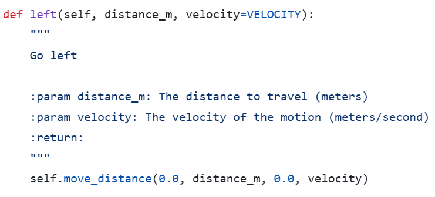
同样地，一下函数都是同样地用法，注意，velocity参数可以不设置，则会使用默认的速度0.1m/s，参考之前的test.py的用法。
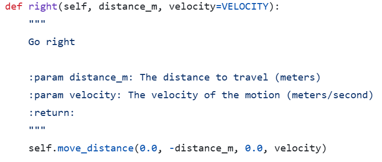
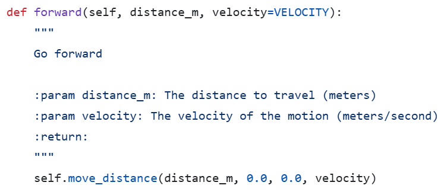
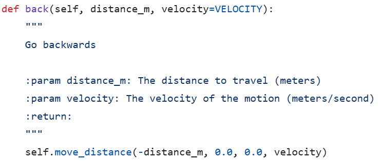
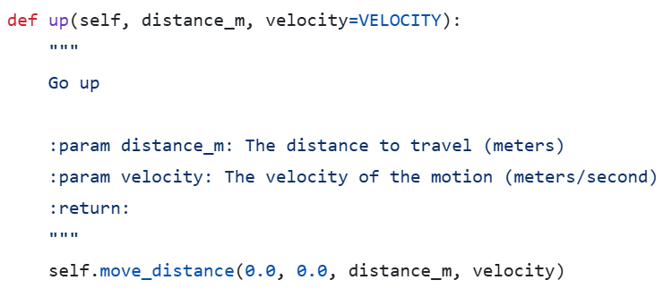
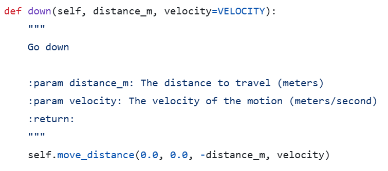
接下来是另一类子函数，turn_left子函数可以控制无人机的前方向左转向。
用法示例：mc.turn_left(90,rate=45)代表无人机向左转90度，且转向的角速度为45度每秒，同样地可以不传入速度使用默认的角速度。
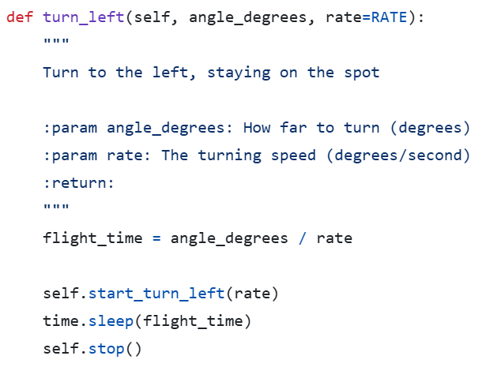
同样地也有turn_right的子函数，可以试验一下turn_right(180)和turn_left(180)的最终效果是否相同。
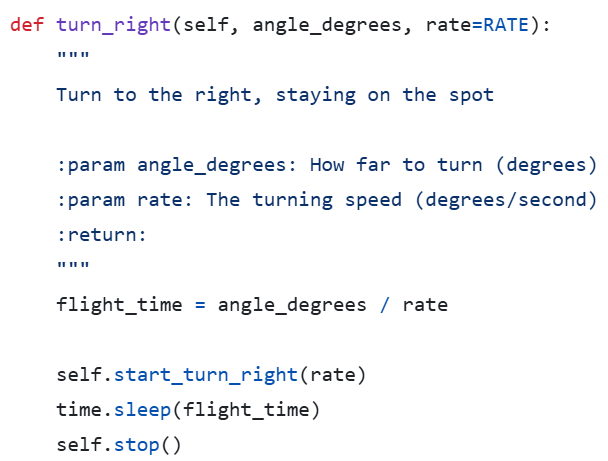
向左转圈的子函数circle_left的定义实现如下，同样也有circle_right的子函数方法。
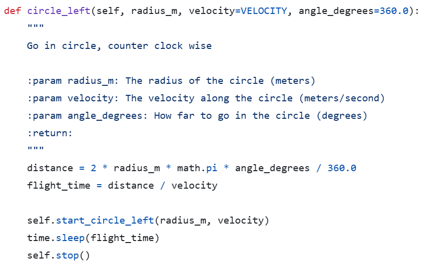
最后再带大家认识move_distance子函数的用法，可以看到前面很多函数的定义都用到了该函数，该函数一共可传入四个值，前三个值分别代表了无人机在立体空间xyz轴上的位移距离，最后一个值代表了速度，使用该函数可以让无人机在立体空间中向任意方向移动。
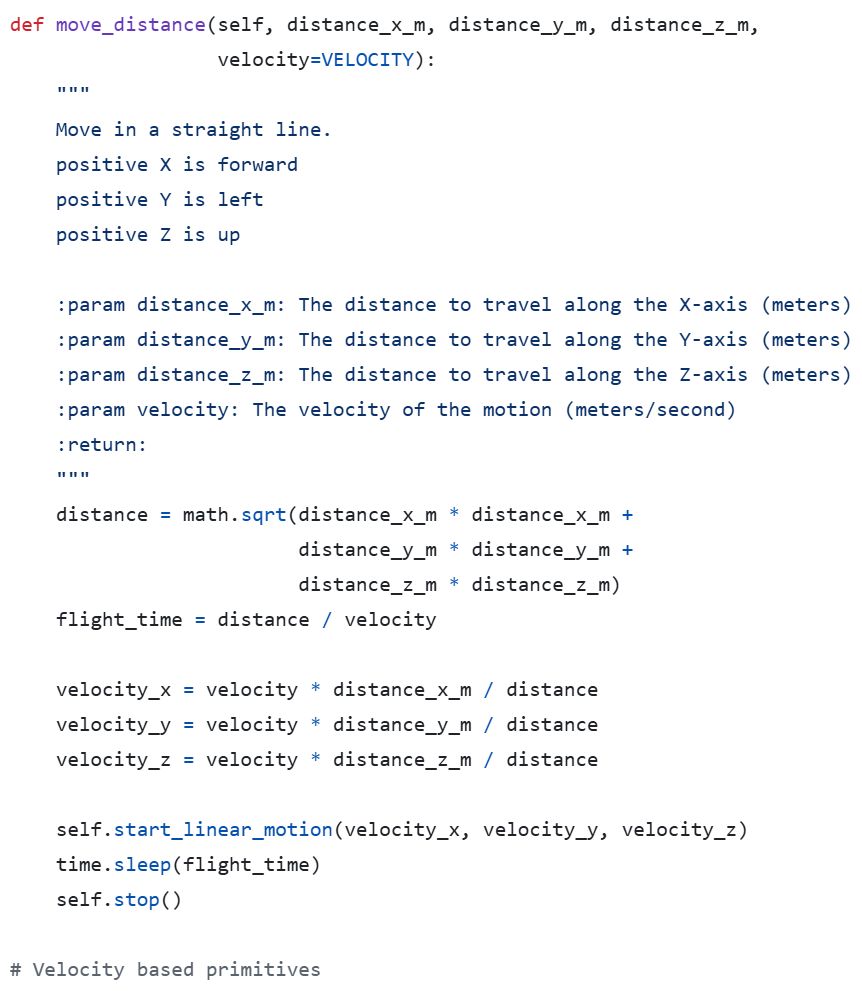
更多的子函数可以再进一步查看motion_commander.py
二、来做一些花样飞行
- 用上面学到的motion commander的用法，让无人机飞出一个8字形的轨迹。提示一下具体的流程，首先无人机自动升空到0.3m，稍微让他飞高一些上升到0.4m的高度，稳定一下姿态，再调用motion commander相关的子函数让无人机飞出一个8字形的轨迹后降落，怎样调用子函数使得整个飞行逻辑更简洁？
- 同样地，用上面学到的命令，使得无人机飞出一个三角形的轨迹，尽可能地飞出一个等边三角形的轨迹。
- 让无人机升空后，原地左转三圈再右转三圈后降落，该如何编写代码？
三、为阶段综合实践做准备
下面介绍阶段综合实践的一部分内容，同学们只需要用前面学到的知识就能完成该任务。任务地图如下，总区域为一个1.5*1.5m的矩形，其中无人机的垂直投影在运行过程中不得落入红色区域，也不能超出该矩形区域范围。蓝色区域代表高30cm的障碍物，黄色箭头所指的方向代表正北方向。任务要求无人机从A区域任意位置起飞，起飞时正方向面对北方，起飞高度默认0.3m，编辑代码使无人机最终在B区域内任意位置降落。其中飞过蓝色障碍时，无人机高度至少为0.5m。
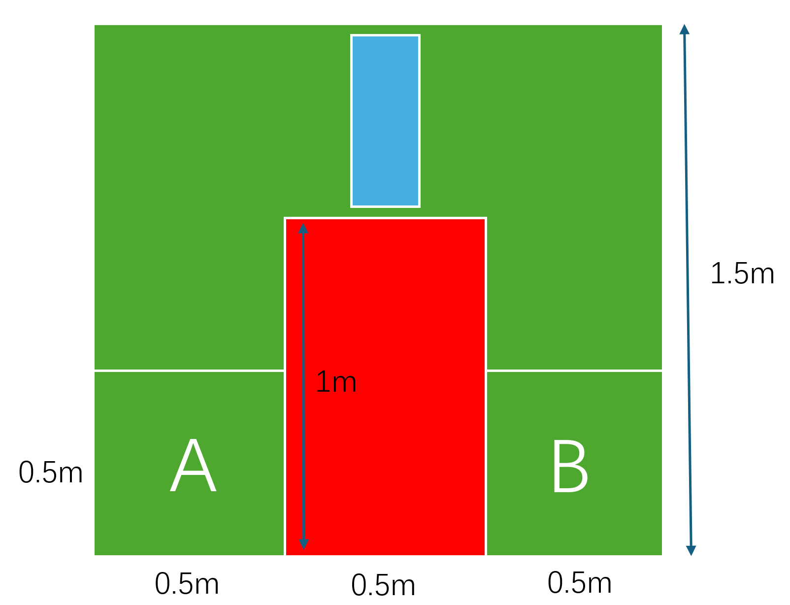
相关区域大小已经给出，大家有余力可以先练习该项目；正式阶段综合实践时可能会加入更多要求，但都会控制在大家力所能及的范围内。